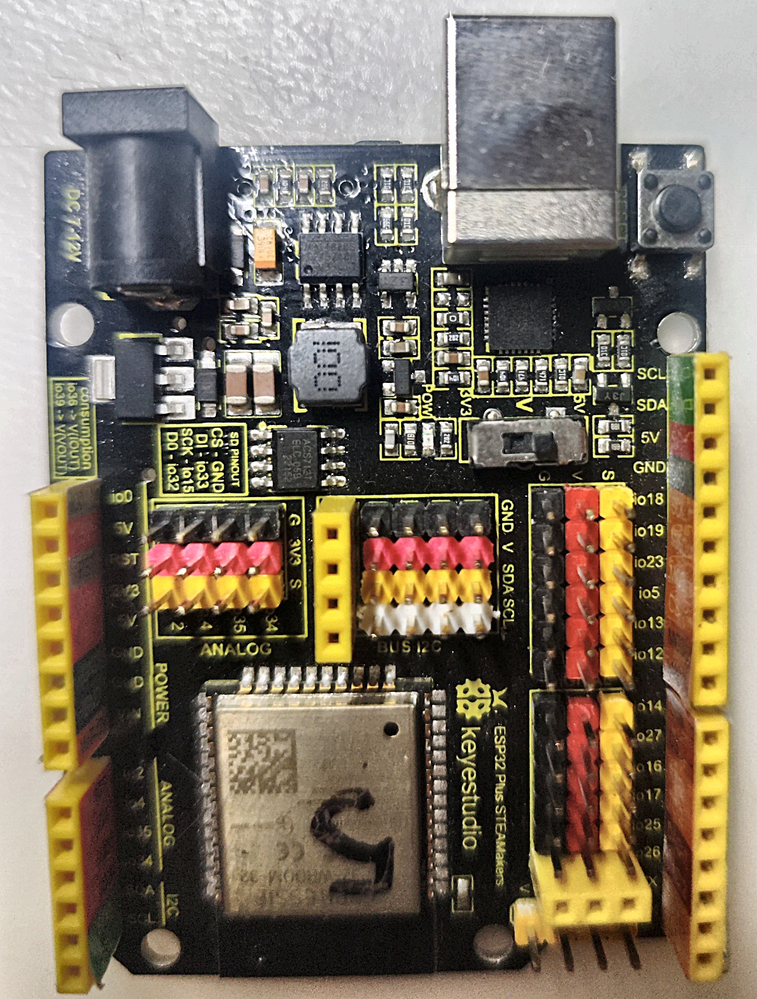
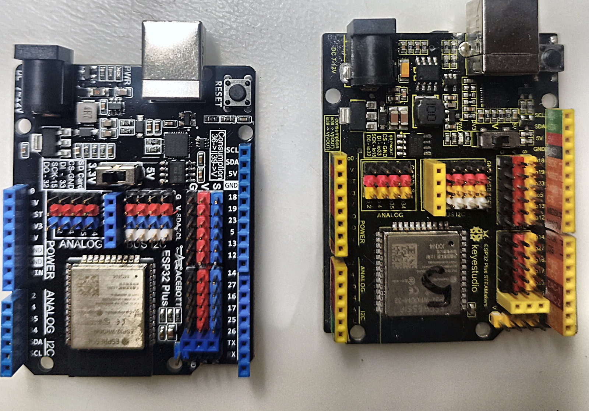

N0 Conoce tu placa y tu entorno
En RyFD I aprendiste a programar una placa con todo integrado. Esta es distinta: la ESP32 STEAMakers viene casi «desnuda», con conectores para que tú decidas qué sensores y actuadores le pones. Eso te da libertad, pero también responsabilidad: ahora el montaje lo haces tú.
⚠️ Antes de empezar
Lee «Antes de enchufar nada». En este nivel no vas a conectar sensores, pero sí vas a trabajar con la placa, y la primera norma ya se aplica: el interruptor de tensión, siempre en 3,3 V.
🎯 Objetivo
- Recordar la estructura de un sistema de control: entradas, proceso y salidas.
- Reconocer las partes de la ESP32 STEAMakers y qué hace cada una.
- Preparar el entorno de programación y enviar un primer programa a la placa.
- Leer en la consola serie lo que la placa te cuenta.
🧠 Recordando: un sistema de control
Todo sistema automático, de un ascensor a un invernadero, se puede dividir en tres partes: las entradas (sensores, que convierten una magnitud física en una señal eléctrica), el proceso (la unidad de control, que decide) y las salidas (actuadores, que convierten la orden en algo que se ve, se oye o se mueve).
Hay un detalle que hace diferente al sistema programado: su memoria empieza vacía. No sabe qué hacer hasta que se lo cuentas con tu programa. Por eso, en esta placa, tú eres el diseñador del cerebro y también del cableado.
🔎 Tu placa por dentro y por fuera
La ESP32 STEAMakers está basada en un chip ESP32-WROOM-32. Tiene el mismo tamaño y la misma colocación de conectores que una placa Arduino UNO, así que admite sus shields, pero por dentro es mucho más potente.
| Característica | Qué significa para ti |
|---|---|
| Procesador de dos núcleos y 520 KB de memoria RAM | Puede hacer varias cosas a la vez, como atender la Wi-Fi y leer sensores. |
| Wi-Fi y Bluetooth (4.2 y BLE) | Se conecta a internet o a tu móvil sin añadir nada. Es la base de los niveles N3 y N4. |
| Conectores tipo Dupont con alimentación | Conectas sensores y actuadores sin soldar. |
| Interruptor 3,3 V / 5 V | Cambia la alimentación (3,3 V o 5 V) de los conectores de entrada y salida y de los I2C. Nosotros lo dejamos siempre en 3,3 V. |
| Conectores I2C (hasta 5 dispositivos) | Con cuatro cables puedes conectar pantallas y sensores digitales avanzados. |
| Zócalo para tarjeta microSD | Guardar datos aunque se desconecte la placa. |
| Medidor de tensión y de intensidad | La placa sabe con qué tensión la alimentas. Útil si algo falla. |
| Botón de reinicio | Reinicia el programa sin quitar el cable. |
| Entradas analógicas de 12 bits | Leen valores entre 0 y 4095. |
Tu placa de verdad: aprende a leer la serigrafía
La serigrafía son los textos impresos sobre la placa. Junto a cada fila de conectores te dice qué pin es. Es lo primero que hay que mirar antes de conectar nada, porque el nombre del pin en la placa manda sobre cualquier esquema.

- Cada columna de pines tiene tres filas: G (masa, el negativo), V (alimentación) y S (señal, la que se programa).
- Las cuatro entradas analógicas del bloque «ANALOG» son A0 = IO2, A1 = IO4, A2 = IO35 y A3 = IO34.
- Las filas digitales llevan el número del pin al lado. Por ejemplo, el pin D2 del editor es el io26.
Dos marcas, la misma forma

Puede que veas placas de marcas distintas con el mismo tamaño y colocación. En las dos de la foto, la serigrafía de los pines coincide (2, 4, 35 y 34 en analógicas, y los mismos números en las filas digitales). Aun así, lee siempre la serigrafía de tu placa y no te fíes de que sea igual que la de otro compañero.
Fuente: manual «Actividades y retos con ESP32 Plus STEAMakers» (Robolot Team / Innova Didactic).
⚠️ Pines con trampa: cuáles evitar y por qué
No todos los pines de la ESP32 valen para todo. Algunos se leen al arrancar para decidir cómo se inicia la placa; otros están conectados a la memoria interna; otros no pueden ser salidas; y otros dejan de leer valores analógicos cuando el Wi-Fi está encendido. Conocer estas limitaciones te ahorra horas de buscar un fallo que no está en tu programa.
1 · Las reglas, una a una
| Qué pasa | Pines | Por qué | Consecuencia si lo ignoras |
|---|---|---|---|
| Pines de arranque (strapping) | IO0, IO2, IO5, IO12, IO15 | Al arrancar o reiniciar, la ESP32 lee el nivel de estos cinco pines para decidir cómo arranca. Cada uno tiene una resistencia interna que fija un valor por defecto: IO0, IO5 e IO15 a 1; IO2 e IO12 a 0. Después del arranque se pueden usar con normalidad. | Un módulo que fuerce un nivel distinto durante el arranque puede dejar la placa en otro modo, sin arrancar o sin poder programarla. Se nota porque «a veces no arranca» y funciona al desconectar el módulo. |
| IO12: el más delicado | IO12 (MTDI) | En el arranque fija la tensión de alimentación de la memoria flash: con 0 (por defecto) usa 3,3 V; con 1 selecciona 1,8 V. | Si un sensor o módulo pone IO12 a 1 al encender, la placa puede no arrancar. Evítalo para módulos que dan un 1 en reposo. |
| Modo de descarga | IO0 e IO2 | Para programar la placa se necesita IO0 a 0 e IO2 a 0 en el reinicio. | Un módulo que fuerce IO0 o IO2 a un nivel contrario puede impedir que el editor suba el programa. |
| Mensajes de arranque | IO15 (MTDO) | Si está a 0 en el arranque, se silencia el mensaje inicial por el puerto serie (por defecto está a 1). | La consola «no dice nada» tras reiniciar. Además, IO15 forma parte de la ranura SD de la placa. |
| Memoria flash interna | IO6 a IO11 | Están conectados a la memoria flash dentro del módulo y no salen a la placa. | No hay que tocarlos. Si algún programa los usa, la placa se cuelga. |
| Memoria PSRAM | IO16 e IO17 | Según el módulo: los que llevan PSRAM (por ejemplo, los WROVER o algunas versiones «R2») los usan para ella. | En tu placa (módulo ESP32-WROOM-32, según Keyestudio) están libres. Si algún día cambias de módulo, confirma que no lleva PSRAM. |
| Solo entrada | IO34, IO35, IO36 e IO39 (IO37 e IO38 no salen del módulo) | Solo pueden leer: no se pueden configurar como salida y no tienen resistencia interna de pull-up ni pull-down. | No sirven para LED, relé o zumbador. Para un pulsador necesitan una resistencia externa (los módulos G-V-S ya la llevan). |
| Wi-Fi y entradas analógicas | Los pines ADC2: IO0, IO2, IO4, IO12, IO13, IO14, IO15, IO25, IO26 e IO27 | El convertidor analógico ADC2 lo comparte el Wi-Fi. Con el Wi-Fi activo, la lectura analógica de esos pines falla (la documentación de Espressif lo indica con claridad, y cita el Wi-Fi, no el Bluetooth). | En N3, N4 o el panel IoT, un sensor analógico en esos pines no lee. Como entrada o salida digital funcionan sin problema. |
| Puerto serie del USB | IO1 (TX) e IO3 (RX) | Son los pines del puerto serie por el que programas la placa y lees la consola. | Si los usas como entrada o salida, tendrás conflictos con la consola y con la subida del programa. |
| Depuración JTAG | IO12, IO13, IO14 e IO15 | Son los pines de un depurador por hardware que en clase no usamos. | No suponen problema. Solo son relevantes por los pines de arranque IO12 e IO15. |
2 · Tu placa, pin a pin
Los rótulos son los de la serigrafía de tu placa. Cuando el editor muestra un nombre de pin distinto (D2, D3…), se indica en la segunda columna.
| Pin (serigrafía) | Editor | Estado | Motivo en tu placa |
|---|---|---|---|
| io18 · io19 · io23 | — | Libres | Sin condiciones. Son los mejores para empezar (salida o entrada digital). |
| io5 | — | Con cuidado | Pin de arranque: por defecto está a 1; si un módulo lo fuerza, puede afectar al arranque. |
| io12 | D8 | Evitar | Pin de arranque que fija la tensión de la flash. Con un módulo que dé 1 en reposo, la placa puede no arrancar. |
| io13 | D9 | Libre para digital | Es ADC2: no lo uses como entrada analógica con Wi-Fi. |
| io14 | D7 | Libre para digital | Es ADC2 (sin analógico con Wi-Fi). |
| io27 | D6 | Libre para digital | Es ADC2 (sin analógico con Wi-Fi). Lo usamos para el zumbador. |
| io16 · io17 | D5 · D4 | Revisar | Libres con tu módulo (sin PSRAM). Lo usamos para el LED y el relé. |
| io25 · io26 | D3 · D2 | Libres para digital | Son ADC2 y salidas de DAC. Lo usamos para LED y para sensores digitales. |
| A0 · pin 2 | — | Con cuidado | Es IO2: pin de arranque y ADC2. Con Wi-Fi no sirve para leer analógicos. |
| A1 · pin 4 | — | Con cuidado | Es IO4: ADC2. Con Wi-Fi no sirve para leer analógicos. |
| A2 · pin 35 | — | Solo entrada (ADC1) | Lee bien con Wi-Fi. Es la mejor opción para un sensor analógico. Solo entrada. |
| A3 · pin 34 | — | Solo entrada (ADC1) | Lee bien con Wi-Fi. Es la mejor opción para un sensor analógico. Solo entrada. |
| io0 | — | Evitar | Pin de arranque (modo de descarga) y ADC2. Aparece como io0 en el conector de la izquierda y no es para sensores. |
| io36 · io39 | — | No los uses | Solo entrada. La serigrafía los rotula como «consumption» (V/I): parecen medir la tensión y la corriente de la propia placa. |
| io15 · io32 · io33 | — | No los uses | Los rotula la placa como pines de la ranura SD (SCK, DO, DI). IO15 es además pin de arranque. |
| SDA · SCL | — | Reservados | Es el bus I2C. En el ESP32 suelen ser IO21 e IO22 (confírmalo con el manual de tu placa). No los uses para otra cosa. |
3 · Cuatro reglas para no fallar
- Digitales: empieza por io18, io19 e io23, que no tienen ninguna condición. Después, io25, io26, io27, io14 e io13.
- Analógicos: usa siempre A2 (IO35) o A3 (IO34). Funcionan con Wi-Fi.
- Nunca pongas un módulo que dé un 1 en reposo en io12, y evita io0, io2 e io15 si no es imprescindible.
- Si «a veces no arranca», desconecta los módulos y vuelve a probar. Después, ve conectándolos de uno en uno.
💻 Tu entorno de programación
Seguimos programando por bloques, como en RyFD I, con STEAMakersBlocks (antes se llamaba ArduinoBlocks). Es una página web, pero necesita un programa auxiliar, el Connector, que es el que pasa el programa desde el navegador a la placa por el cable USB.
El orden importa, y es la causa de la mayoría de los problemas al empezar:
- Conecta la placa al ordenador con su cable USB.
- Abre el Connector y déjalo abierto todo el rato.
- Abre STEAMakersBlocks. Debería aparecer el puerto COM que el ordenador ha asignado a tu placa.
🧪 Práctica N0 · Hola desde la consola
El hilo conductor de este material, igual que en RyFD I, es el puerto serie: una conversación entre la placa y tu ordenador. Es la forma más rápida de saber qué está pasando dentro de la placa, y la primera herramienta cuando algo no funciona.
🛠️ Móntalo paso a paso
- Crea un proyecto nuevo con el tipo de proyecto de tu placa, la ESP32 STEAMakers.
- En el bloque Inicializar, pon el bloque que inicia el puerto serie a 115200 baudios. Esa velocidad es la que usa este material.
- En el Bucle, añade un bloque que envíe un texto por el puerto serie con el mensaje «Hola desde la ESP32», y después una espera de 1000 milisegundos.
- Envía el programa a la placa. Elige el puerto COM que apareció.
- Abre la consola serie de la plataforma, selecciona 115200 baudios y pulsa Conectar. Cada segundo debería aparecer una línea nueva.
Los nombres exactos de los bloques pueden variar un poco según la versión de la plataforma. Si no encuentras uno, búscalo en las categorías de comunicación y puerto serie.
Retos
Cambia el mensaje
Haz que la placa escriba tu nombre y el de tu grupo, y que lo repita cada 2 segundos.
Cuenta los mensajes
Muestra un contador que aumente en uno cada vez y que se vea en la consola junto al texto: «mensaje número 1», «mensaje número 2»…
¿Cuánto tarda de verdad?
Comprueba si «esperar 1000 ms» y «un mensaje por segundo» son lo mismo. Mide cuántos mensajes salen en un minuto, explica la diferencia y razona de dónde viene.
📓 Qué anotar en el porfolio
- Una captura de tu programa de bloques y otra de la consola con la salida.
- Qué puerto COM te asignó el ordenador y si tuviste que repetir el orden de conexión.
- Una frase con lo que has descubierto sobre el puerto serie.
✅ Comprueba lo que has aprendido
1. ¿En qué posición dejamos siempre el interruptor de tensión de la placa?
2. En un sistema de control, ¿qué papel hace un sensor?
3. ¿Para qué sirve el Connector?
4. La consola no muestra nada, o muestra símbolos raros. ¿Qué comprobarías primero?
5. Más adelante, la placa se reinicia sola al usar la Wi-Fi. ¿Qué podría estar pasando?